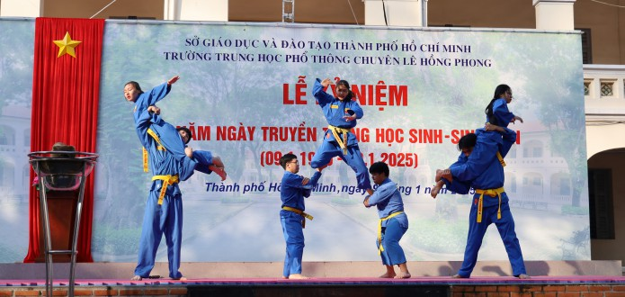

Lễ kỷ niệm 75 năm ngày truyền thống Học sinh - Sinh viên (9/1/1950 - 9/1/2025)
Thứ năm, 09/01/2025
Ngày 9 tháng Một hằng năm gắn liền với ký ức về những người sống có lý tưởng, muốn dấn thân tranh đấu vì hòa bình và biết quên mình cho những ước mơ, qua tấm gương anh Trần Văn Ơn - người chiến sĩ cách mạng kiên trung - người học sinh tiêu biểu của trường Petrus Ký. Cũng chính từ đó, ngày 9 tháng Một trở thành ngày truyền thống của trường Petrus Ký - Lê Hồng Phong, mang ý nghĩa kết nối, nhắc nhớ quá khứ, khơi dậy niềm tự hào và tinh thần tiếp nối truyền thống yêu nước học giỏi, đột phá sáng tạo đi đầu trong các lĩnh vực của các thế hệ học sinh Petrus Ký - Lê Hồng Phong.
Sáng ngày 9/1/2025, trường THPT chuyên Lê Hồng Phong đã long trọng tổ chức Lễ kỷ niệm 75 năm ngày truyền thống Học sinh - Sinh viên (9/1/1950 - 9/1/2025)
